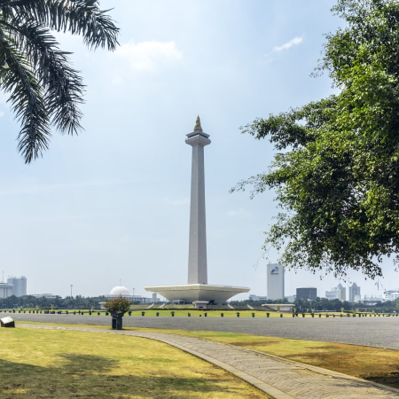
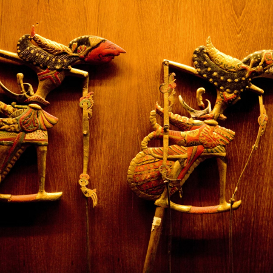

Jakarta, the bustling capital of Indonesia, is a cultural melting pot. A diverse mix of traditions, from Javanese and Malay to Arab, Indian, and Dutch swirl together in this megalopolis. The result is a dynamic, lively city with its own intriguing flavor. You'll discover that Jakarta has the world's best coffee scene, and most socializing in the city takes place at trendy cafés – not lounges. You'll find yourself craving the fried rice found at Jakarta's countless street food stalls – and develop friendships with the chefs. And you'll end up in the city's glitzy, multipurpose shopping malls for retail therapy, along with entertainment, events, and art.
At the heart of Bogor are the fabulous botanical gardens, known as the Kebun Raya; the city’s green lung covers 87 hectares. Everyone loves the Orchid House with its exotic and delicate blooms, but there are more than 15,000 species of plant here including 400 different kinds of palm (don't miss the footstool palm, which tops out at an impressive 25m). There are lots of graceful pandan trees and some huge agave and cacti in the Mexican section.
It is here that Jakartans come to take a breather from the traffic. The figurative centre of Jakarta, Merdeka Square (merdeka means independence) is actually a trapezoid measuring almost 1 sq km. In the 19th century, the Dutch called it Koningsplein (Kings Square) and it became a focal point for the city after they moved the government here from old Batavia (Kota). It's always had an important role in local life. The main entrance is on the south side.
This puppet museum has one of the best collections of wayang (flat wooden puppets) in Java and its dusty cabinets are full of a multitude of intricate, eerie and beautiful characters from across Indonesia, as well as China, Vietnam, India, Cambodia and Europe. The building itself dates from 1912. Ask about the occasional free wayang performances.